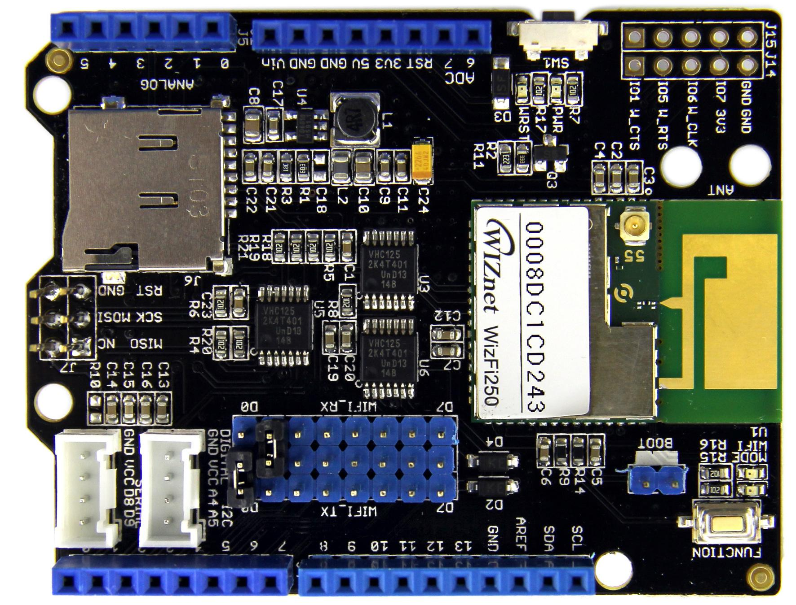
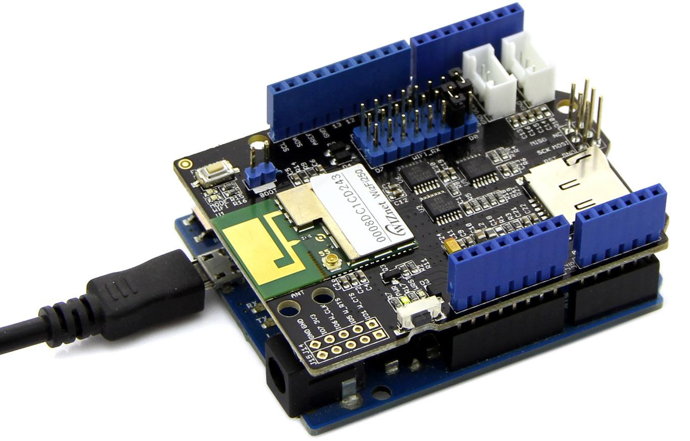
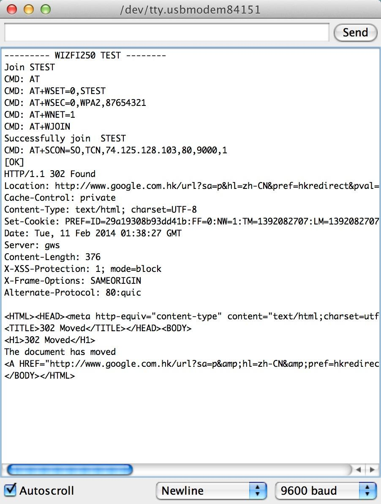
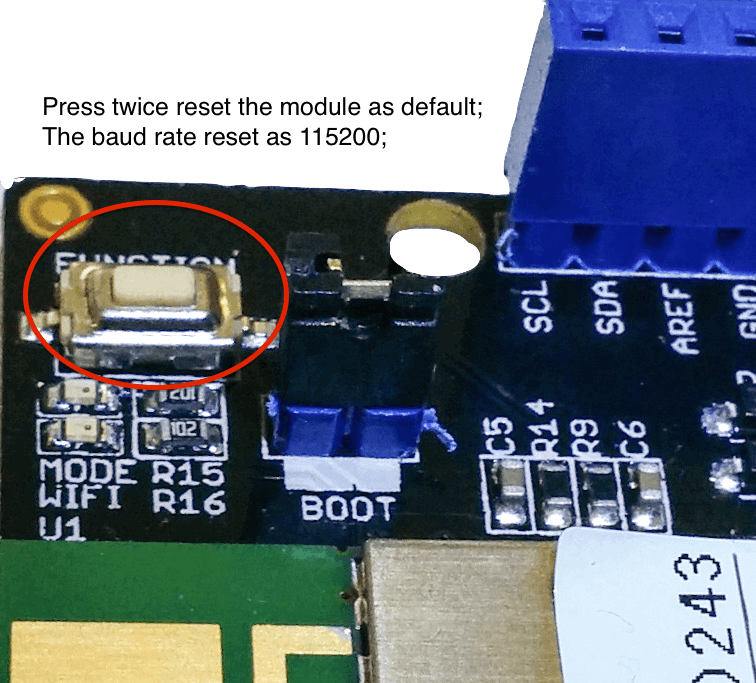
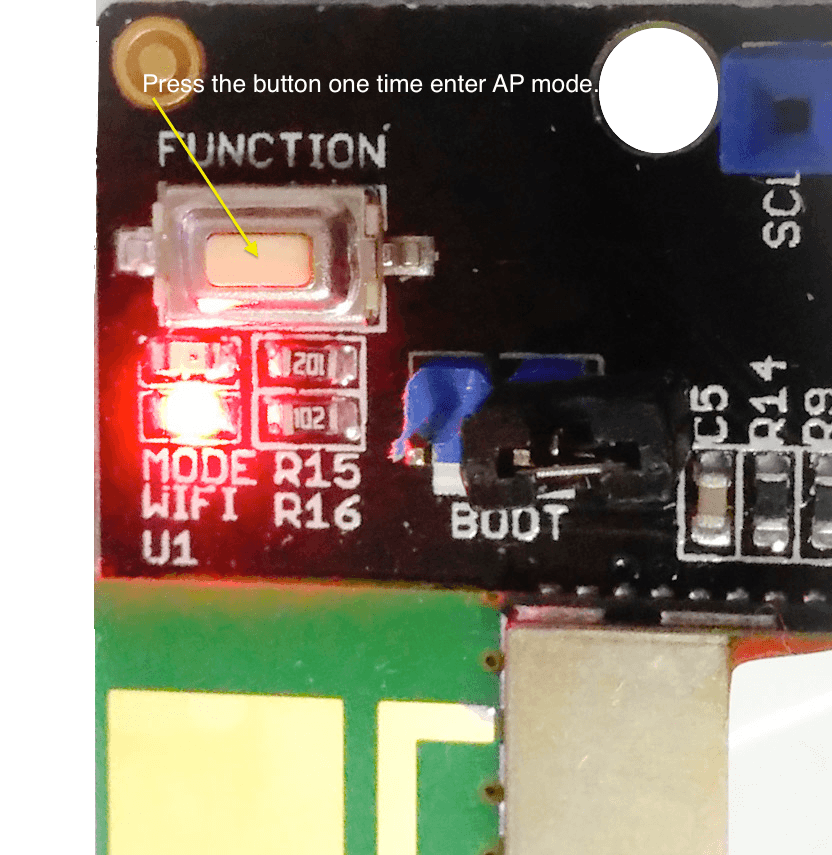
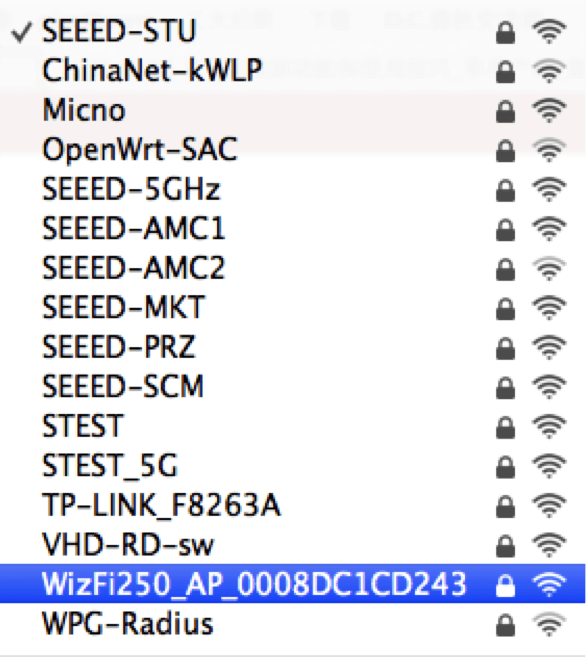
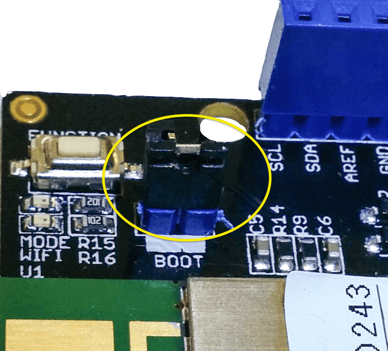
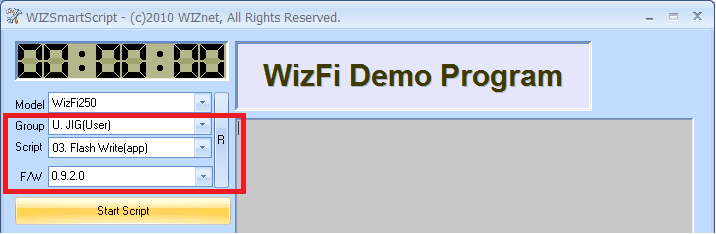
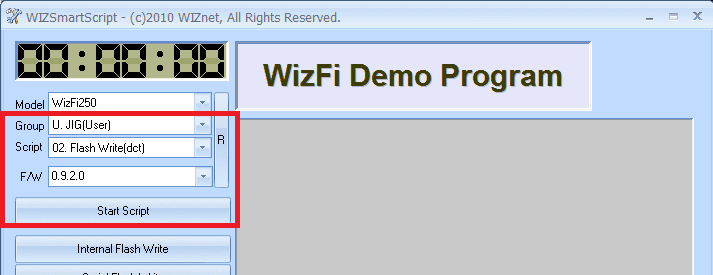
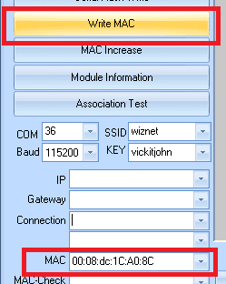

Wifi Shield (Fi250) V1.1 is a economic internet solution with Arduino. The Wi-Fi module support IEEE 802.11b/g/n mode, maximum speed up to 65Mbit/s. Wifi Shield (Fi250) V1.1 combine on board antenna; it’s easy to build you project in a small box. The module reserve a UFL connector, you can use an extra antenna to improve the signal range. There is a key on the board, just push one time to change wifi shield as AP mode. The module have a computer interface software, you can control and upgrade the module via USB-UART convertor.
The wifi shield contain a Micro SD card socket, it’s like a recorder when wifi shield working as TCP, UDP server.

| Module | WIZnet FI250 |
| Operating Voltage | 5V or 3.3V (Auto select) |
| Current | 300mA (maximum) |
| Single band | 2.4GHz IEEE 802.11b/g/n |
| Antenna | On board PCB antenna (reserver UFL connector) |
| Memory | 1MB Flash Memory, 128KB SRAM, 1MB Serial Flash |
| Interface | UART(default)/SPI(upgrade firmware) |
| Dimensions | 69.0x53.5x23.5 mm |
| Weight |
The demo we use a Arduino Leonardo, we suggest you use a hardware serial port, software is not fast enough to communicate with the Wifi module.

Install Wifi Shield (Fi250) library, download demo code Wizfi250_Client.
/*
//This demo use Arduino Leonardo or Seeeduino Lite. The jumper connect D0-WIFI_TX, D1_WIFI_RX; Let the boot pin not connect
*/
#include <Arduino.h>
#include "WizFi250.h"
#define SSID "STEST" //Set your SSID
#define KEY "87654321" //Set your phrase
#define AUTH "WPA2" // Set the encrypt type
#define HOST_IP "192.168.168.185" //Set the TCP Server IP
#define REMOTE_PORT 9090 //Set the port
#define LOCAL_PORT 1234 //Set the port
#define spi_CS 8
WizFi250 wizfi250(&Serial1);
boolean returnValue=false;
void setup() {
Serial.begin(115200);
Serial1.begin(115200);
while (!Serial);
pinMode(spi_CS,OUTPUT);
Serial.println("--------- WIZFI250 TEST --------");
// wait for initilization of Wizfi250
delay(1000);
Serial.println("Join " SSID );
wizfi250.reset();
delay(1000);
wizfi250.sendCommand("AT+WLEAVE\r");
delay(1000);
if (!wizfi250.join(SSID, KEY, AUTH)) {
Serial.println("Failed join " SSID);
Serial.println("Please Restart");
} else {
Serial.println("Successfully join " SSID);
wizfi250.sendCommand("AT+WSTAT\r");
delay(5);
char c;
while(wizfi250.receive((uint8_t *)&c, 1, 100) > 0) {
Serial.print((char)c);
}
delay(2000);
returnValue=wizfi250.connect(HOST_IP,REMOTE_PORT,LOCAL_PORT);
if(returnValue)
Serial.println("Now you can send data to Server or receive data from Server!");
}
}
void loop() {
if(wizfi250.available()) {
Serial.print((char)wizfi250.read());
}
if(Serial.available()) {
wizfi250.print((char)Serial.read());
}
}
Install Wifi Shield (Fi250) library, download demo code Wizfi250_http.
/*
//This demo use Arduino Leonardo or Seeeduino Lite. The jumper connect D0-WIFI_TX, D1_WIFI_RX; Let the boot pin not connect
*/
#include <Arduino.h>
#include <SoftwareSerial.h>
#include "WizFi250.h"
#define SSID "STEST" //Set your SSID
#define KEY "87654321" //Set your phrase
#define AUTH "WPA2" //Set the encrypt type
#define TSN_HOST_IP "74.125.128.103" //google.com server
//#define TSN_HOST_IP "115.239.210.26" //baidu.com server
//#define TSN_HOST_IP "192.168.1.254" // broadcast
#define TSN_REMOTE_PORT 80
#define LOCAL_PORT 9000
#define spi_CS 8
//SoftwareSerial sprintSerial(4,5); // The software serial port is not stable.
WizFi250 wizfi250(&Serial1);
void setup() {
Serial.begin(115200);
Serial1.begin(115200);
while (!Serial);
pinMode(spi_CS,OUTPUT);
digitalWrite(spi_CS,HIGH);
Serial.println("--------- WIZFI250 TEST --------");
// wait for initilization of Wizfi250
delay(1000);
Serial.println("Join " SSID );
delay(10);
if (!wizfi250.join(SSID, KEY, AUTH)) {
Serial.println("Failed join " SSID);
} else {
Serial.println("Successfully join " SSID);
wizfi250.clear();
wizfi250.connect(TSN_HOST_IP,TSN_REMOTE_PORT,LOCAL_PORT);
delay(10);
wizfi250.send("GET / HTTP/1.1\r\n\r\n");
}
char c;
for(int i=0;i<320;i++){
if (wizfi250.receive((uint8_t *)&c, 1, 100) > 0) {
Serial.print((char)c);
}
}
}
void loop() {
while (wizfi250.available()) {
Serial.write(wizfi250.read());
}
while (Serial.available()) {
wizfi250.write(Serial.read());
}
}




The step for upgrade F/W show as below: Connect your wifi shield(Fi250) via UART directly,you can use a UartSBee or other UART tools
Before upgrade your F/W, you may set the module to Program mode (short BOOT jumper pin) wizfi250firmware

1st action

2nd action

3nd action
